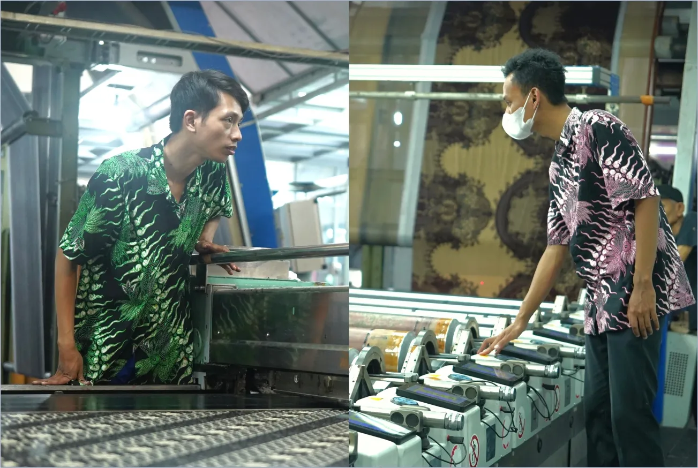

Flat and Rotary Printing: Understanding Two Fabric Printing Methods
Patterned fabric may look simple at first glance. Yet different methods and production processes lie behind the patterns printed on its surface.
In textile printing, one important consideration is the printing method used.
Two established fabric printing methods are flat printing and rotary printing. Each has its own characteristics and can be selected to suit production requirements.
What Is Flat Printing?
Flat printing uses a flat screen to apply color and patterns to the fabric surface.
The process takes place in stages according to the colors and pattern sections being printed.
This method can produce a variety of fabric patterns, with attention to design details and production needs.
What Is Rotary Printing?
Unlike flat printing, rotary printing uses a cylindrical screen that moves during the printing process.
Because the process runs continuously, rotary printing differs from flat printing and can suit particular production requirements.
What Is the Difference?
The main differences lie in the shape of the printing medium and how the printing process is carried out.
Flat Printing
- Uses a flat screen
- Printing takes place in stages
- Offers process characteristics suited to particular design and production needs
Rotary Printing
- Uses a cylindrical screen
- Printing runs continuously
- Offers characteristics suited to particular production needs
The choice of method is not determined by the fabric's final appearance alone. The design, material, production requirements, and intended product characteristics should also be considered.
Choosing the Right Process
Not every textile requirement calls for the same production approach.
Understanding the characteristics of each printing method can help determine which process best suits the need.
Ultimately, the printing method is just one part of a fabric's journey.
Material, design, color, finishing, and quality control also contribute to the final result.